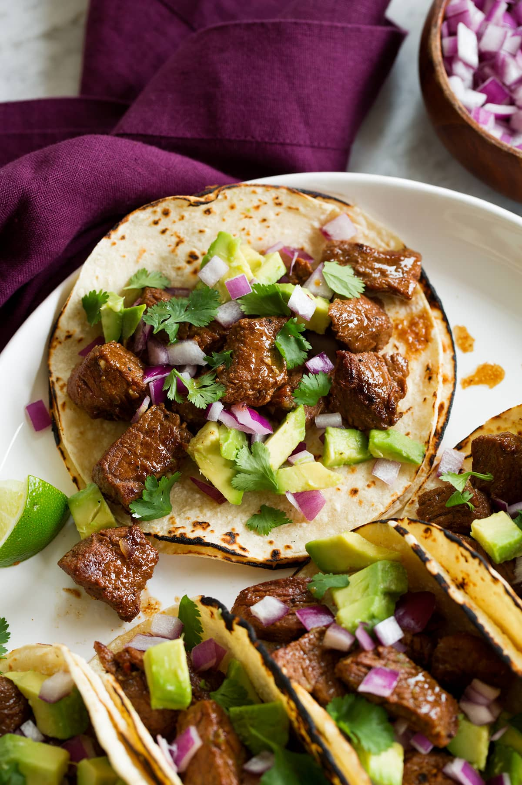

Home
Steak Tacos

Description
The BEST steak tacos recipe! Steak pieces are soaked in a simple lime and ancho chili seasoned marinade and quickly pan seared in a super hot skillet until just perfectly browned. From there it's layered on tortillas and finished with your favorite toppings!
Ingredients for Steak and Marinade
- 1 1/2 lbs. sirloin steak (preferably prime grade or well marbled with fat)
- 3 tbsp fresh lime juice
- 3 tbsp olive oil
- 2 tsp honey
- 2 tsp minced garlic
- 1.5 tsp ancho chili powder
- 1 tsp ground cumin
- 1 tsp salt
- 1 tsp freshly ground black pepper
- 4 tsp vegetable oil, divided
Ingredients for Serving
- 10 (6-inch) corn tortillas, warmed
- 1 avocado, diced
- 1/2 small red onion or white onion, diced
- 1/4 cup chopped cilantro
Steps
- Cut steak into small pieces: Cut steak into strips that are 1/2-inch thick, then cut into pieces that 3/4-inch in size.
- Mix marinade ingredients: In a large mixing bowl whisk together lime juice, olive oil, honey, garlic, ancho chili powder, cumin, salt and pepper.
- Toss steak and marinade, rest: Add steak pieces to lime mixture then toss well to coat. Cover and refrigerate 1 hour and up to 6 hours.
- Heat 2 tsp vegetable oil in a cast iron skillet over medium-high heat.
- Quickly sear half of the steak at a time: Once oil is just smoking, use tongs to remove half the steak from the bowl (shake off some excess marinade) and transfer to pan and immediately spread steak pieces out into an even single layer in pan (stand back it can splatter).
- Let cook about 45 seconds until nicely browned on bottom, then quickly flip each piece and cook to desired doneness, about 45 seconds longer (for food safety USDA recommends internal safe temperature of 145 degrees on an instant read thermometer, I like to go to about 135 degrees). Transfer steak to a plate.
- Wipe skillet clean using tongs and a ball of paper towels. Return to heat and add remaining 2 tsp oil and let heat. Repeat cooking and transferring process with remaining steak.
- Serve right away in warmed tortillas with avocado, onion and cilantro.